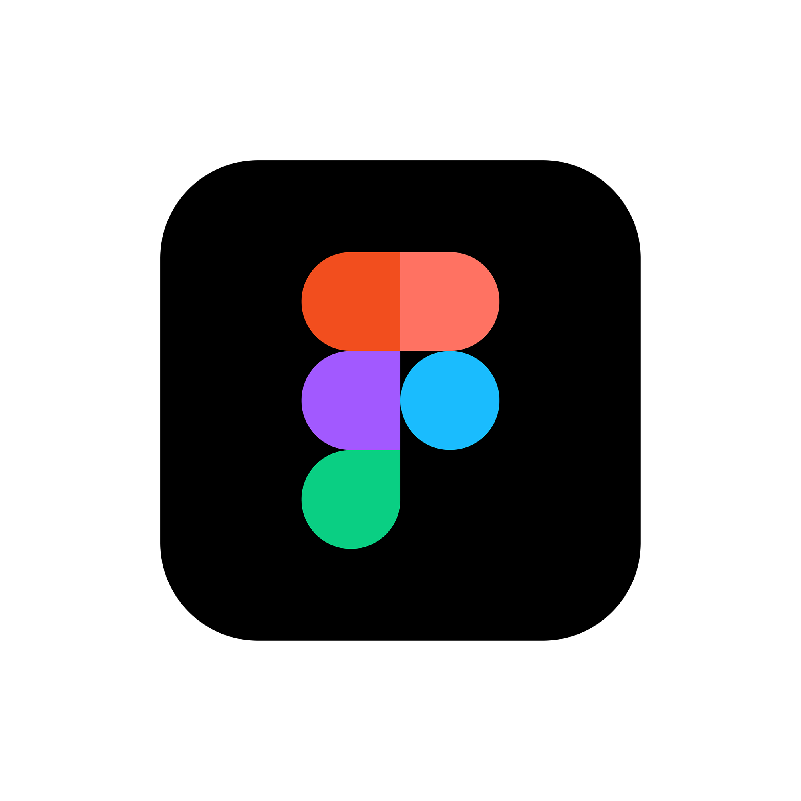

CREATE. SHARE. REPEAT

Proficient in creating visually appealing posters, resumes, presentations, social media content, and infographics. Experienced in using templates, brand kits, and animations for quick and professional design work.
Skilled in UI/UX design with hands-on experience in creating wireframes, prototypes,and user interface layouts. Comfortable collaborating on real-time team projects and using design systems efficiently.

Proficient in designing engaging and professional presentations. Experienced in using animations, transitions, infographics, charts, and slide layouts for academic, technical, and creative projects. Capable of delivering clear, structured, and visually effective presentations.
Experienced in photo editing, background removal, color correction, and creative visual design. Familiar with layer management, masking, retouching, and effects for both digital and print media.
Experienced in video editing using filmora bringing ideas to life through dynamic cuts transition and motion effects I have grafted multiple videos for content creators or not academic projects ensuring each fees in is crispun engaging and visually polished.

Experience using Wix to design and develop visually appealing and user-friendly websites. Using Wix’s drag-and-drop builder, I have created responsive portfolio and business websites with customized layouts, animations, and mobile optimization.